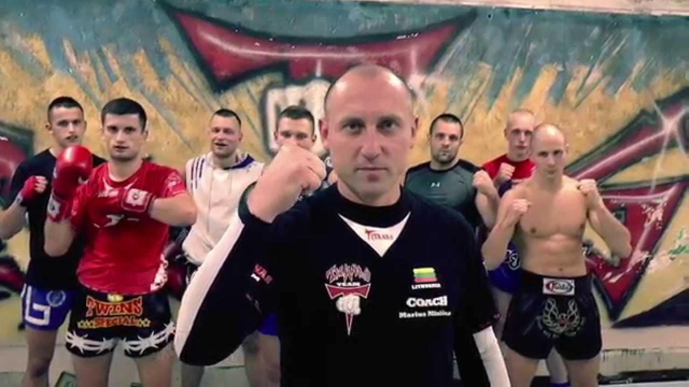
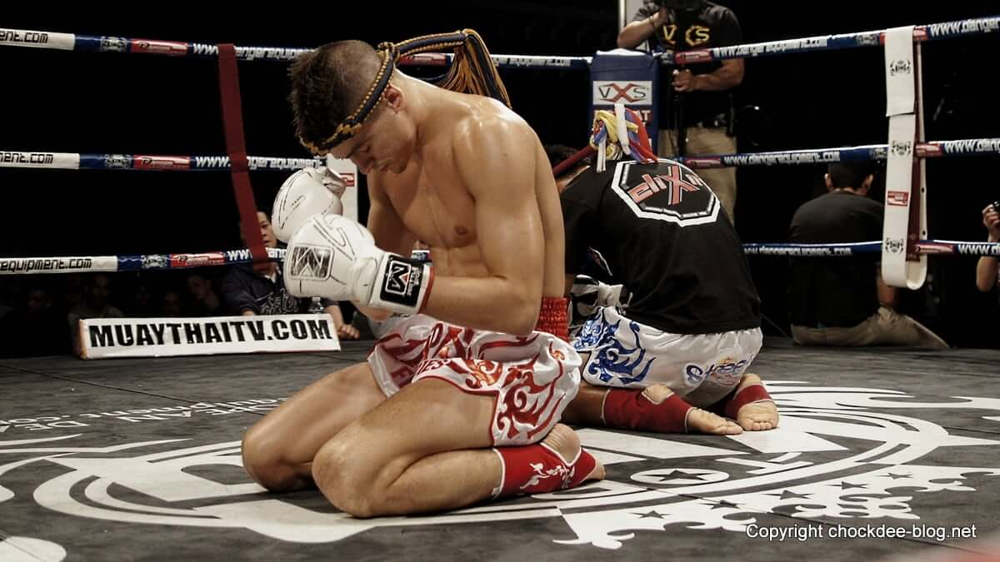

Kas yra Muay thai?
Kovos menas, išsivystęs apie 1600 m. Siame
(dabartinis Tailandas) šios šalies kariams ginant
savo žemę nuo užkariautojų. Vėliau, geriausius
karius atrenkant kovoms prieš kaimyninių šalių
karius, Muay Thai išsivystė kaip sporto šaka.
Jo iki šiol yra mokoma Tailando armijoje.

Atvykimas į Lietuvą
Lietuvoje muaythai sporto šaka atsirado iškart ponepriklausomybės atkūrimo, 1990 m., Kauno sporto
klubo „Titanas“ treneriui ir pirmajam federacijos
prezidentui Mariui Misiūnui pradėjus treniruoti
sportininkus. Lietuvos muaythai sąjunga
(dabartinė Lietuvos muaythai federacija)
įkurta 1994 m.

„Wai Khru“ ceremonija
Wai khru yra universali sąvoka, egzistuojanti beveik
visame Tailando performanso mene – nuo tradicinės
tajų muzikos iki klasikinio Khon šokio ir kovos menų,
tokių kaip krabi krabong ir Muay Thai. Wai yra
tradicinis tailandietiškas pasisveikinimas delnais
kartu kaip pagarbos ženklas. Khru yra tajų sanskrito
žodžio guru forma, reiškianti „mokytojas“.
